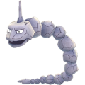
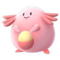
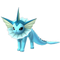
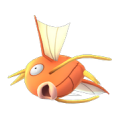
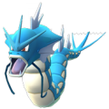
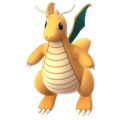
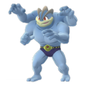
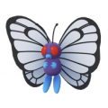
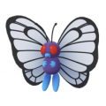

In Pokemon Go, Pokemon have three major stats: Attack, Defense, and HP. Currently, this graph is plotting Pokemon's attack against their defense.
There are four noticeable outliers. We'll look at the psychic Pokemon on the far right and the water Pokemon on the far left a little later. The other two Pokemon are Onix to the left and Cloyster to the right. Both of them have extremely high defenses of 288 and 323 respectively. In a fight where you want someone beefy to tank hits, one of these two would be your choice. Cloyster hits significantly harder though.


Swapping attack for HP now pulls Onix and Cloyster lower into the pack. However, a new Pokemon jumps straight out of the group: Chansey, with a whopping 500 health. Though it might not shine in attack and has a mediocre defense, Chansey makes a great defender because of how Pokemon Go gyms work: Pokemon get their health doubled while defending in a gym.

While Cloyster still has twice the defense of Chansey, Chansey makes up for it with five times more health: an 800 HP difference! The three Pokemon with the closest health values--Snorlax, Wigglytuff, and Vaporeon--would also make decent defenders and pack a little more attack, as the next transition show.



Note that plotting HP and attack once again pull the previously mentioned strong psychic Pokemon to the far right and the weak water Pokemon to the far left. These are Mewtwo and Magikarp, respectively.


Mewtwo, the artificially cloned Pokemon featured in the first Pokemon movie, is the strongest creature in the first generation and Magikarp, a fish that can do absolutely no damage in other Pokemon games, is the weakest by far. Mewtwo is extremely difficult to catch in Pokemon Go, requiring a huge dose of luck to even be given the opportunity. Magikarp starts out weak, but evolves into the powerful Gyarados.

The difference will become especially clear when plotted for CP.
CP is the stat displayed by Pokemon Go that summarizes the three stats that we have examined. In general, a higher CP Pokemon is better, especially when it comes to attack. However, this plot shows that giving up some CP can yield a higher attack, which might help tear down a tough defender if time is a concern.
Of course, we have been ignoring one important factor so far: type. Pokemon can use rock-paper-scissors style counters by exploiting their types. Water beats fire, for example, while fire beats grass.
Looking at types in this graph can yield some interesting results as well. Here, the bug type Pokemon have been highlighted. In general, they are generally weaker Pokemon, and therefore can be beaten even if you lack a type advantage.
Dragon type, however, are generally very strong. Therefore, you might want to invest in some strong counters, specifically ice Pokemon or other dragon Pokemon.

We already pointed out that Chansey, Snorlax, and Wigglytuff make strong defenders. They are all normal type Pokemon, so in addition to powering up any Chansey, Snorlax, and Wigglytuff you have, you might want to look for some strong fighting type Pokemon as well.

There is one more interesting feature worth pointing out. With the notable exception of Legendary Pokemon, most Pokemon evolve as they get stronger, so we can expect Pokemon that are later evolutions to be stronger.
The only exception is Metapod and Kakuna, which both represent the immobile cacoon stages of their species.
This helps explain why Onix is weaker than Cloyster. Onix is only the first stage evolution while Cloyster is the second. In fact, Onix unlocks a stronger second evolution in the next batch of Pokemon, so it is still worth powering up your Onix to evolve it into the powerful Steelix!
Of course, in the end, the best Pokemon is whichever Pokemon you like the most! The numbers and stats here may help you in eking out the toughest battles, but the current battle system in Pokemon Go makes it possible for almost any Pokemon to contribute to a fight. Further updates may introduce new stats or abilities to elevate weaker Pokemon as well! In the graph below, you can adjust the factors for yourself to look for more patterns.
 Pokemon Go
Pokemon Go


 
